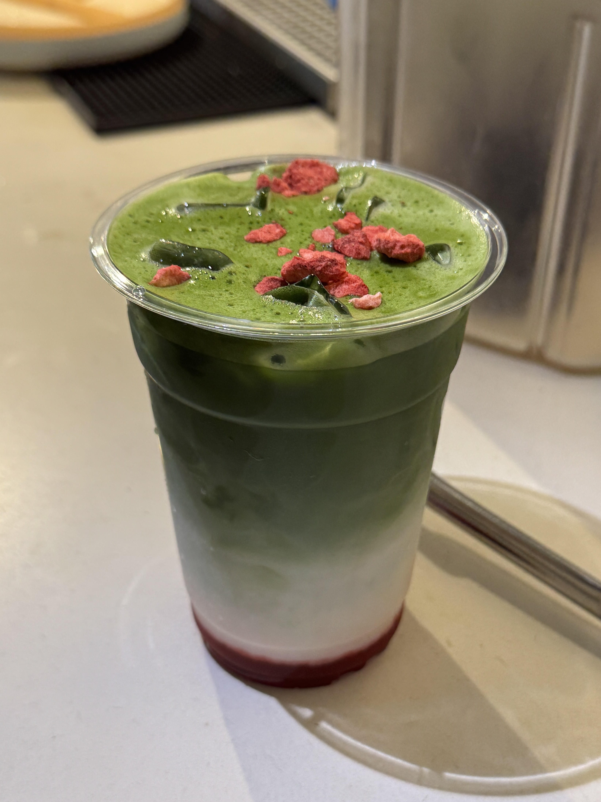

1. Matcha powder
2. Strawberry syrup/puree
3. Hot water
4. Shifter
5. Choice of Milk
6. Bowl and Whisk
7. Scale
8. Spoon
9. Cup
1. Place bowl on scale and shifter on top of the bowl then tare it
2. Measure out 5 grams of matcha powder and sift it into the bowl using the spoon to help push the powder through the shifter
3. Heat water to about 175°F (80°C) and pour 60 grams into the bowl with the matcha.
4. Whisk the matcha and water together using a bamboo whisk quickly in a "w" shape until it becomes frothy.
5. Measure 35 grams of strawberry syrup in your cup using the scale
6. Add ice and choice of milk in the same cup
7. Pour the matcha mixture into the cup
8. Add strawberry flakes !
⠀⠀⠀⠀⠀⢀⡀⠀⠀⠀⠀⠀⡄⠀⠀⠀⠀⢀⠀⠀
⠀⠀⠀⠀⠀⠀⣏⠓⠒⠤⣰⠋⠹⡄⠀⣠⠞⣿⠀⠀
⠀⠀⠀⢀⠄⠂⠙⢦⡀⠐⠨⣆⠁⣷⣮⠖⠋⠉⠁⠀
⠀⠀⡰⠁⠀⠮⠇⠀⣩⠶⠒⠾⣿⡯⡋⠩⡓⢦⣀⡀
⠀⡰⢰⡹⠀⠀⠲⣾⣁⣀⣤⠞⢧⡈⢊⢲⠶⠶⠛⠁
⢀⠃⠀⠀⠀⣌⡅⠀⢀⡀⠀⠀⣈⠻⠦⣤⣿⡀⠀⠀
⠸⣎⠇⠀⠀⡠⡄⠀⠷⠎⠀⠐⡶⠁⠀⠀⣟⡇⠀⠀
⡇⠀⡠⣄⠀⠷⠃⠀⠀⡤⠄⠀⠀⣔⡰⠀⢩⠇⠀⠀
⡇⠀⠻⠋⠀⢀⠤⠀⠈⠛⠁⠀⢀⠉⠁⣠⠏⠀⠀⠀
⣷⢰⢢⠀⠀⠘⠚⠀⢰⣂⠆⠰⢥⡡⠞⠁⠀⠀⠀⠀
⠸⣎⠋⢠⢢⠀⢠⢀⠀⠀⣠⠴⠋⠀⠀⠀⠀⠀⠀⠀
⠀⠘⠷⣬⣅⣀⣬⡷⠖⠋⠁⠀⠀⠀⠀⠀⠀⠀⠀⠀
⠀⠀⠀⠀⠈⠁⠀⠀⠀⠀⠀⠀⠀⠀⠀⠀⠀⠀⠀⠀